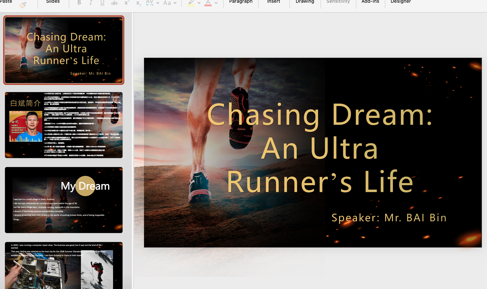
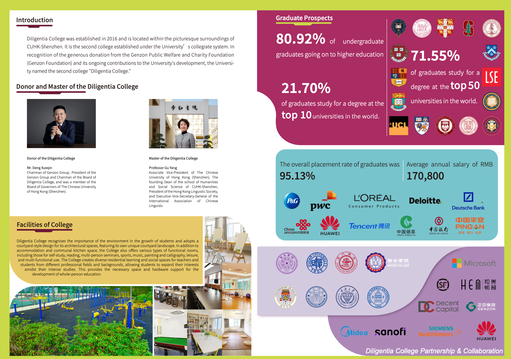
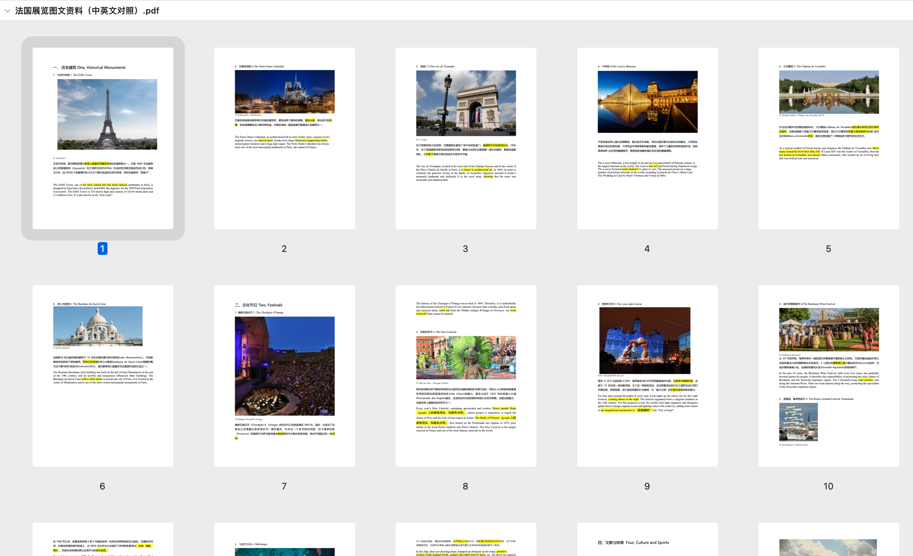

As a translator, I focused on faithful meaning across languages—preserving tone, technical terms, and cultural context so the final text reads naturally to its audience. Projects included academic, professional, and general-audience material where precision mattered as much as readability.
Translation reinforced skills that overlap with legal work: close reading, consistency, and an instinct for when a literal rendering would mislead. It also strengthened my ability to serve as a bridge between Chinese and English communication settings.